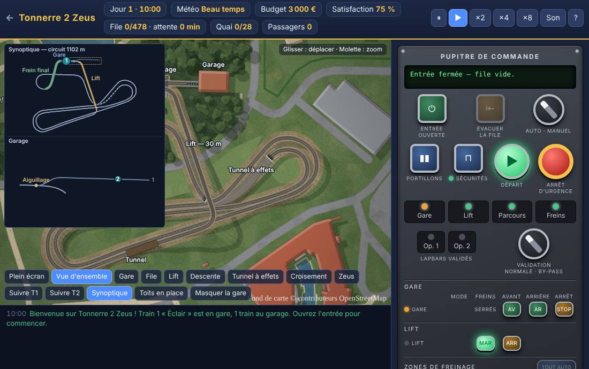
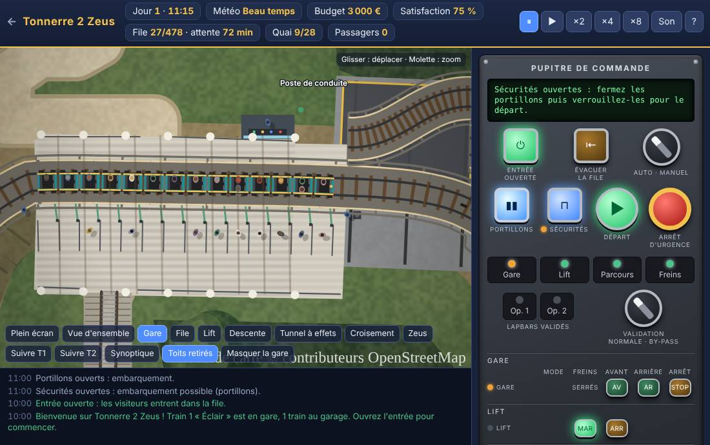
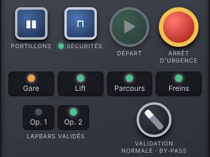
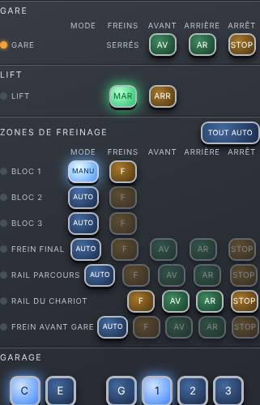
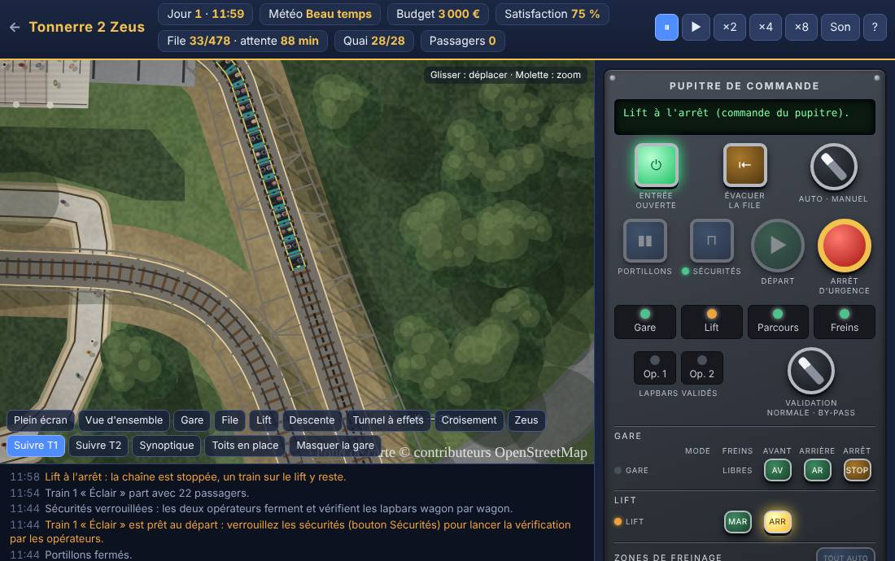
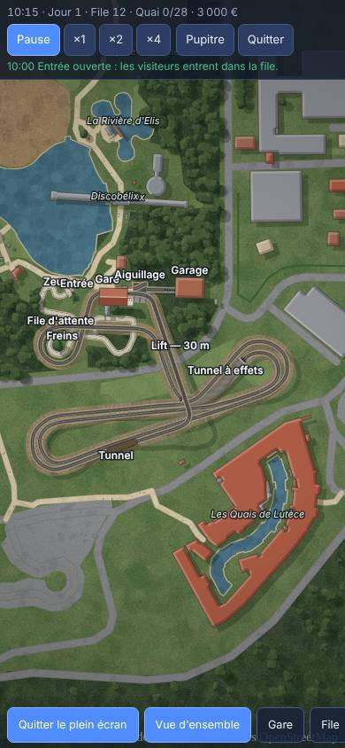

Exemple sur Tonnerre 2 Zeus. Le jeu démarre en mode Auto, un train est en gare, l'entrée est fermée.

Le pupitre : entrée, évacuation, Auto · Manuel, portillons, départ, arrêt d'urgence, voyants, puis les sections Gare, Lift, Zones de freinage et Garage.
Ouvrir l'entrée. Bouton « Entrée ouverte » du pupitre (ou clic sur le portail à l'entrée de la file). Le journal annonce « Entrée ouverte : les visiteurs entrent dans la file. » Fermée, plus personne n'entre, mais ceux qui sont déjà dans la file continuent d'embarquer.
Laisser le quai se remplir. Les visiteurs se rangent derrière les portillons, deux au plus par portillon, un portillon par wagon.
Ouvrir les sécurités. Un train arrive en gare lapbars verrouillés : le journal le rappelle. Bouton « Sécurités » du pupitre : les lapbars (harnais sur OzIris et Goudurix) se relèvent sur chaque place ; le voyant passe à l'ambre. Rien ne s'ouvre seul, ni en auto ni en manuel.
Débarquement. Il ne commence qu'une fois les sécurités ouvertes : les passagers descendent côté sortie.
Embarquement. Bouton « Portillons » : le journal annonce « Portillons ouverts : embarquement. » Les visiteurs montent dans les places dont les sécurités sont ouvertes. Le bouton est refusé s'il n'y a aucun train à quai prêt à embarquer.
Fermer les portillons avec le même bouton quand l'embarquement est fini. En Auto, attendez le message « … est prêt au départ : fermez les portillons, puis verrouillez les sécurités… » (train plein ou attente écoulée).
Verrouiller et vérifier. Portillons fermés, bouton « Sécurités » : le verrouillage lance la vérification. Les deux opérateurs passent wagon par wagon, abaissent chaque lapbar ou harnais resté ouvert puis valident : les voyants « Op. 1 » et « Op. 2 » s'allument l'un après l'autre. Portillons encore ouverts, le verrouillage est refusé.
Départ. En Auto, le train part seul une fois les lapbars validés (« … part avec 28 passagers. »). En Manuel, le journal dit « Lapbars validés par les deux opérateurs : départ possible. » et le bouton « Départ » s'allume. Sécurités ouvertes, le départ est refusé : « Départ refusé : sécurités ouvertes. »

Portillons ouverts : les visiteurs montent dans le wagon en face.

Les voyants « Lapbars validés » pendant la vérification : ici Op. 2 a validé, Op. 1 pas encore.
By-pass. Le sélecteur « Validation Normale · By-pass » permet de partir sans validation des lapbars, au risque d'un incident et d'une amende.
Arrêt d'urgence. Le gros bouton rouge stoppe le lift et bloque départs et manœuvres ; appuyez de nouveau pour réarmer. Par orage, ne faites partir aucun train : chaque départ sous l'orage coûte une amende. À la fin de l'orage, le pupitre l'annonce ; si vous aviez enclenché l'arrêt d'urgence, désenclenchez-le pour reprendre l'exploitation.
Sous les gros boutons, le pupitre est découpé en sections : Gare, Lift, Zones de freinage (freins de bloc, frein final…) et Garage. Les colonnes sont Mode, Freins, Avant, Arrière, Arrêt. Vous commandez une zone, jamais un train.

La Trace du Hourra : Bloc 1 est passé en MANU (bouton « MANU » allumé), les autres zones restent en AUTO.
AUTO et MANU
Chaque zone de freinage est en AUTO par défaut : le cantonnement serre et relâche seul ses freins. Un train ne franchit un frein de bloc que si le canton suivant est libre.
Un clic sur « AUTO » passe la zone en MANU : le bouton « F » (freins) serre ou relâche à votre main, et les boutons AV, AR, STOP commandent ses moteurs s'il y en a. Le journal note « Bloc 1 en MANU : freins commandés au pupitre. »
Le relâchement d'un frein est refusé si la section suivante est occupée : « Canton suivant occupé : Train 1 reste au frein de bloc 1. »
« TOUT AUTO » remet toutes les zones de freinage en AUTO d'un coup.
Gare : les freins se serrent seuls tant qu'un train est à quai (voyant SERRÉS) et ne se relâchent que par la séquence Départ, portillons fermés et lapbars validés (voyant LIBRES).
Retenue au lift

Le lift mis à l'arrêt (« ARR ») : « Lift à l'arrêt : la chaîne est stoppée, un train sur le lift y reste. »
Un seul train à la fois sur le lift. Le suivant attend au pied : « Train 2 attend au pied du lift : un train est sur le lift. »
Le train arrivé en haut est retenu (chaîne arrêtée pour lui) tant que la zone de freinage suivante est occupée : le premier frein de bloc s'il y en a un, sinon le frein final.
Vous pouvez aussi arrêter le lift à la main avec « ARR » (section Lift) ; « MAR » le relance.
Le garage se commande aux boutons de la section « Garage » et des zones de voie. Règles communes à toutes les attractions :
le train à garer est vide, portillons fermés ; un train avec passagers ne quitte jamais le circuit ;
l'appareil de voie (aiguillage, pont, rail mobile) ne bouge pas si un train est dessus ou tout près ; attendez qu'il soit en place avant de faire rouler le train ;
chaque voie de garage a un bouton « DISPATCH » : l'appareil étant sur cette voie, il fait entrer le train prêt (vide à quai, sur le frein final ou sur le pont) s'il y a de la place, sinon il fait sortir le train de tête ; le sens (avant ou arrière) est choisi seul, l'arrêt est automatique, avant le butoir. Si le pont ou la gare porte déjà un train et que la voie est pleine, rien ne sort : il n'y a la place que pour un train ;
à côté, le bouton F de la voie force ses freins : serrés, ils arrêtent aussitôt le train qui entre ou qui sort, et DISPATCH est refusé ; relâchés, le train repart au prochain DISPATCH ;
pour retenir un autre train pendant la manœuvre, passez le frein final en MANU et serrez-le (« F ») ;
en fin de manœuvre, remettez l'appareil sur P (circuit) et appuyez sur « TOUT AUTO ». Les refus s'affichent au journal.
Zeus : l'aiguillage dans le prolongement de la gare, la voie de garage à droite.
Garer : train vide à quai, aiguillage sur 1 (attendre qu'il soit en place), « DISPATCH » de la voie : le train avance jusqu'au fond du garage, aiguillage sur P. Sortir : gare libre, aiguillage sur 1, « DISPATCH » : il recule jusqu'en gare, aiguillage sur P.
La Trace du Hourra : rail mobile du parcours et chariot
Trace du Hourra : six voies droites, un bob par voie, desservies par un pont transbordeur droit.
Deux éléments mobiles indépendants : le rail mobile du parcours (boutons C sur le circuit, E retiré) et le chariot du pont (G, 1 à 6). Garer : train vide, frein final en MANU et serré (il s'arrête avant le pont), rail mobile retiré, chariot sur G, relâcher, « Frein final AV » (il passe sur le rail du chariot), chariot face à une voie libre (il emporte le train), « DISPATCH » de cette voie (il y entre), chariot au repos, rail mobile sur le circuit, « TOUT AUTO ». Sortir : chariot face à la voie, « DISPATCH » de la voie (il recule sur le rail du chariot), rail mobile retiré, chariot sur G (dernier canton libre), « Rail du chariot AV » vers le frein avant gare puis la gare, puis le rail mobile sur le circuit.
OzIris : le rail du parcours va chercher les trains
OzIris : trois voies de maintenance parallèles au frein final, en amont du pont.
Le pont porte un seul rail, le « Rail du pont » : c'est la fin du circuit qui vient chercher les trains. En P il est en ligne avec le circuit ; face à une voie (1 à 3) le circuit est interrompu et les trains attendent avant le pont. Les voies sont en arrière du pont. Garer : train vide (« Gare AV »), « Rail du pont » en MANU et freins serrés (il s'y arrête), pont sur une voie libre (il emporte le train), relâcher les freins puis « DISPATCH » de cette voie : il recule dans la voie ; pont sur P, « TOUT AUTO ». Sortir : pont face à la voie, « DISPATCH » de la voie (il avance sur le rail), pont sur P si le dernier canton est libre : il repart vers la gare.
Goudurix : marche arrière depuis la gare, aiguillage rotatif
Goudurix : la voie de maintenance se trouve en amont de la gare, à une quarantaine de mètres de l'arrêt (position estimée).
L'aiguillage est un rail rotatif qui tourne sur lui-même autour du tube de rail. Garer : train vide à quai, portillons fermés, aiguillage sur 1 (attendre la fin de la rotation), « DISPATCH » de la voie : le train recule de la gare jusqu'au fond de la voie, aiguillage sur P. Sortir : gare libre, aiguillage sur 1, « DISPATCH » : il avance jusqu'en gare, aiguillage sur P.
Les emplacements des garages et les vitesses de manœuvre sont en partie estimés ; le détail est dans les notes de chaque attraction.
La file de Zeus : les visiteurs suivent le chemin, les boucles de la file sont visibles à l'écran.
Les barrières. Les barrières de la file sont posées par l'éditeur de l'attraction. Chacune s'ouvre et se ferme seule : cliquez dessus sur la carte (au toucher : touchez-la). Pour voir la file qui passe sous la gare, utilisez « Masquer la gare » au-dessus de la carte.
Chemins. À chaque embranchement, les visiteurs prennent le plus court chemin vers la gare qui ne passe que par des barrières ouvertes. Fermer le raccourci les envoie dans la boucle : file plus longue, plus de capacité ; l'ouvrir raccourcit l'attente.
Une barrière fermée arrête tous ceux qui veulent la franchir : s'il n'y a aucun chemin ouvert, ils attendent devant ; barrière d'entrée fermée, plus personne n'entre.
Évacuer la file. Le bouton « Évacuer la file » fait repartir tout le monde vers l'entrée ; les évacués s'arrêtent aussi devant une barrière fermée : le voyant « Évacuation en cours » passe au rouge, le journal nomme la barrière et la carte l'entoure de rouge ; ouvrez-la. Pendant l'évacuation, personne n'entre dans la file ; le journal annonce « Évacuation terminée, la file peut reprendre. »
Le curseur de fréquentation du panneau de droite règle l'afflux, de parc vide à saturé. Ceux qui attendent trop longtemps abandonnent et baissent la satisfaction.
Onglet « Pupitre » : les mêmes commandes, boutons de 44 px au moins.
Trois onglets en bas : « Carte », « Pupitre » et « Journal ». Sur téléphone et tablette étroite, le pupitre et le journal sont des tiroirs ; touchez de nouveau l'onglet actif pour revenir à la carte.
Gestes. Un doigt déplace la carte, deux doigts zooment. Touchez une barrière de la file pour l'ouvrir ou la fermer, ou un numéro de train dans le synoptique pour le suivre.
Plein écran. Bouton « Plein écran » sous la carte. Une barre en haut garde l'heure et le dernier message ; « Pupitre » ouvre le pupitre par-dessus la carte, « Quitter » ressort du plein écran. Si le navigateur n'a pas d'API plein écran, le jeu se rabat sur un plein écran de la page.
Paysage. Tournez l'appareil : l'écran se réorganise.
Installer. Depuis l'écran titre en ligne (ligne « Installer ») : Android / Chrome, ligne « Installer » du menu ; iPhone et iPad (Safari), Partager puis « Sur l'écran d'accueil ». L'application fonctionne ensuite hors ligne.

La carte en plein écran sur iPhone.
Ces gestes sont testés avec des événements tactiles simulés, pas sur un appareil réel.
Carrière : budget de départ, usure des éléments, pannes (lift, freins, lapbars), météo et orages ; chaque passager rapporte 5 €, les salaires (environ 39 € par heure de jeu) sont prélevés en continu ; le bouton « Bilan de l'exploitation » du pupitre donne les statistiques cumulées ; sous −2 000 € de budget, la partie s'arrête. Le jeu est continu : l'horloge tourne de 10:00 à 19:00 puis repart à 10:00 sans rien remettre à zéro, et l'attraction ne ferme que si vous fermez l'entrée.
Bac à sable : ni budget, ni météo, ni pannes, pour s'entraîner aux manœuvres. L'en-tête du jeu affiche « Bac à sable ».
Sauvegarde automatique : séparée par attraction et par mode, enregistrée dans le navigateur à la fermeture ou au changement de page, et toutes les 30 secondes. Le bouton « Continuer » de l'écran titre rouvre la dernière partie jouée, et la vignette de chaque attraction affiche « Partie en cours — hh:mm ». Elle ne se synchronise pas entre appareils, et vider les données du site l'efface.
Nouvelle partie : bouton « ? » (aide) du jeu, puis « Nouvelle partie ». Une fenêtre propose « Carrière », « Bac à sable » ou « Annuler » : elle efface la sauvegarde de cette attraction dans le mode choisi, l'autre mode est conservé.